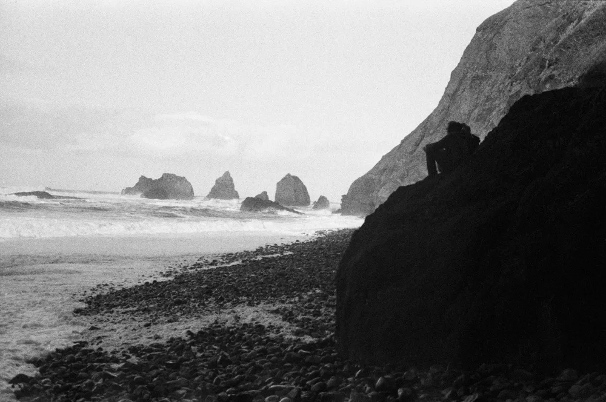
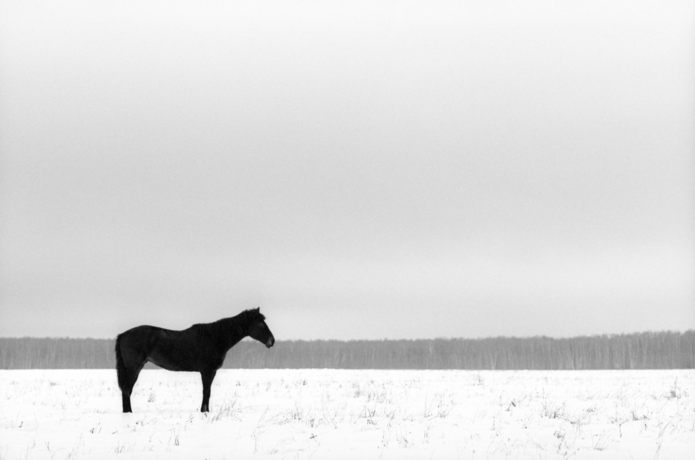

付一卷的钱拍 72 张：半格把胶卷成本砍一半，但 39 卷里只有 20 卷颗粒撑得住
同一卷胶卷，装进 135 单反能拍 36 张，装进半格能拍 72 张——胶卷的钱一分没多花。这是半格全部的卖点，也是它全部麻烦的来源：每张成本确实减半，代价是颗粒、镜头缺陷、对焦误差一起被多放大 1.4–1.5 倍。这篇只算三笔账：多少钱、哪几卷撑得住、以及什么时候你其实不该买。
一、先把账算清：每张到底多少钱
本站 39 卷里，37 卷有 135 参考价；Neopan 100、Neopan 400 已停产、没有在架价，这篇不参与计算。⚠️ 这里的价格是本站档位估算，不是实采市价，也没有标注采集日期（口径见站内免责声明）——拿它比「贵还是便宜」可以，别当成今天的成交价。
算法就一句话：135 一卷 36 张，半格一卷 72 张，同一卷胶卷的价格不变。所以每张成本直接对折。
| 135 参考价（中位） | 含哪些卷 | 全画幅每张 | 半格每张 | 每张省下 |
|---|---|---|---|---|
| ¥33 | Fomapan 100、Fomapan 200 | ¥0.92 | ¥0.46 | ¥0.46 |
| ¥35 | Fomapan 400 | ¥0.97 | ¥0.49 | ¥0.49 |
| ¥53 | Kentmere 100、Kentmere 400、RPX 100、RPX 400 | ¥1.47 | ¥0.74 | ¥0.74 |
| ¥60 | CHM 100、CHM 400、UN54+ | ¥1.67 | ¥0.83 | ¥0.83 |
| ¥65 | Retro 80S、Retro 400S | ¥1.81 | ¥0.90 | ¥0.90 |
| ¥70 | Silvermax 100 | ¥1.94 | ¥0.97 | ¥0.97 |
| ¥80 | HP5 Plus、FP4 Plus、CMS 20 II、Lady Grey 400 | ¥2.22 | ¥1.11 | ¥1.11 |
| ¥85 | Double-X 5222、XP2 Super、Earl Grey 100 | ¥2.36 | ¥1.18 | ¥1.18 |
| ¥90 | Delta 100、Delta 400、Potsdam Kino 100 | ¥2.50 | ¥1.25 | ¥1.25 |
| ¥95 | Tri-X 400、Pan F Plus、Ortho Plus 80、Berlin Kino 400 | ¥2.64 | ¥1.32 | ¥1.32 |
| ¥100 | T-Max 100、T-Max 400、SFX 200 | ¥2.78 | ¥1.39 | ¥1.39 |
| ¥105 | T-Max P3200 | ¥2.92 | ¥1.46 | ¥1.46 |
| ¥108 | Acros II、Delta 3200、BWXX、Direct Positive | ¥3.00 | ¥1.50 | ¥1.50 |
| ¥125 | StreetPan 400、Pancro 400 | ¥3.47 | ¥1.74 | ¥1.74 |
一眼能看出两件事。第一，最便宜一档是 0.46 元一张，最贵一档是 1.74 元，差 3.8 倍——胶卷本身的贵贱，比装什么机器重要得多。第二，半格只是把整列数字对折，它不会让贵的卷变便宜，只会让贵的卷「贵得慢一点」。所以顺序别搞反：想省钱先换便宜卷，半格是第二层放大；两件事叠在一起才明显（Fomapan 100 + 半格 = 0.46 元一张）。
二、代价：画幅正好一半，什么都得多放大
135 画幅是 24×36mm（864 mm²），半格是 18×24mm（432 mm²）——面积正好是一半，长边是 3/4、短边是 2/3。所以同样一张照片要出成同样大小：按面积算要放大 √2 ≈ 1.41 倍，按长边算 36÷24 = 1.5 倍。颗粒、镜头缺陷、对焦误差，全部被同倍放大。
这不是玄学，是算术。所以半格的第一条选卷原则，跟卷好不好看没关系，而是颗粒够不够细：同一卷胶卷，在全画幅上「颗粒可见」，搬到半格就是「颗粒很显眼」。

还有一个容易被忽略的连带项：镜头也得经得起放大。便宜半格机的塑料镜片，边角在全画幅上还能糊过去，半格放大后就藏不住了——不是镜头突然变差，是你把它放大得更多了。
三、39 卷里哪 20 卷撑得住
本站给每一卷都标了颗粒档位（ultra-fine / fine / medium / coarse），分档依据写在站内免责声明里。按上面那笔算术，判断标准很硬：颗粒越细越安全。
| 颗粒档位 | 卷数 | 这一档里有哪些卷 | 半格怎么用 |
|---|---|---|---|
| ultra-fine | 1 | CMS 20 II（ISO 20） | 首选，但用途很窄：ISO 20 只能大晴天拍，还要专用显影液 |
| fine | 19 | Pan F Plus、Ortho Plus 80、Retro 80S、T-Max 100、Acros II、Neopan 100、Delta 100、Kentmere 100、Fomapan 100、CHM 100、Silvermax 100、RPX 100、UN54+、Earl Grey 100、Potsdam Kino 100、FP4 Plus、T-Max 400、Delta 400、XP2 Super | 首选。这是半格真正能打的那一档 |
| medium | 18 | SFX 200、Fomapan 200、Fomapan 400、Double-X 5222、BWXX、Tri-X 400、Neopan 400、HP5 Plus、Kentmere 400、CHM 400、RPX 400、Retro 400S、StreetPan 400、Lady Grey 400、Berlin Kino 400、Pancro 400、Direct Positive、T-Max P3200 | 能用，但是拿画质换场景：要在弱光、要反差、要电影感时才值得 |
| coarse | 1 | Delta 3200（ISO 3200） | 别用。它本来就在用颗粒换速度，半格再放大一倍多，等于花两份代价买同一个速度 |

四、机器怎么选：最贵的不是相机，是回本
半格不是怀旧玩物——2023 年以后它又活了一轮，可选的机器比想象中多。下表价格是本轮一手采到的零售价，采集日 2026-11-06：
| 机型 | 每卷能拍 | 价格（一手） | 上市 | 说明 |
|---|---|---|---|---|
| Kodak Ektar H35 | 72 张 | £50.00 ≈ ¥449 | — | 最便宜的可重复使用半格机 |
| Kodak Ektar H35N | 72 张 | £64.95 ≈ ¥583 | 2023-08 | 玻璃镜片、星芒滤镜、B 门、三脚架孔 |
| Lomography Simple Use 半格（黑白） | 72 张 | $29.99 ≈ ¥200 | 2026-07 | 出厂已装好一卷胶卷，最便宜的入门 |
| Lomography Simple Use 半格（彩色） | 72 张 | $34.99 ≈ ¥233 | 2026-07 | 同上，彩色版 |
| Valoi Easy35 v2 半格片夹 | — | £42.95 ≈ ¥385 | — | 自己翻拍扫描时必须用它，否则会切错画幅 |
真正的门槛在回本。按「每卷省下半卷的钱」算，一台 H35（约 ¥449）：
这张账算出来的结论有点反常识：机器越便宜、你用的卷越贵，回本越快。如果你本来就是 Fomapan、Kentmere 这一档的用户，半格省下来的钱要两三年才追得回机身钱——那就别拿省钱当买它的理由，拿「想要 72 张」当理由。
⚠️ 三点必须说清：① 汇率用 ECB 2026-11-05 中间价（GBP→CNY 8.9751、USD→CNY 6.6684）② 英国店标价含 20% VAT、美国店不含销售税，两边都不含运费和关税，寄到国内还要再加 ③ H35N 不是新品——它是 2023 年 8 月上市的机型，零售商页面上那句「a new half-frame camera」是当年留下的旧文案，别被「新上架」误导。
五、什么时候其实不该用半格
这是全文最该看的一段。半格省的是「每张」的钱，不是「总花销」——它把你的胶卷变成两倍张数，而不是把花出去的钱退回来。所以下面四种情况，省下来的钱会原样花回去：
六、想试，三步就够
半格没有让你的胶片变便宜，它只是把你舍不得按的那次快门，变成了两次。
所以结论是一句话：半格值得买，前提是你用得起它——用量够、颗粒选得对、不指望放大。三条里缺一条，省下来的钱都会在冲扫和废片里花回去。上面提到的每一卷，站内都有独立档案页，颗粒档位和价格都写在里面，买之前先对一遍你抽屉里那堆卷。
本文算到的卷，站内都有独立档案页
Acros II（ISO 100 · fine 颗粒 · 半格首选档） Kentmere 100（ISO 100 · fine 颗粒 · 便宜又能用那档） HP5 Plus（ISO 400 · medium 颗粒 · 能用但要认账） Delta 3200（ISO 3200 · 唯一 coarse · 半格别碰）
去胶卷库看看这几卷
「胶卷档案」是一个可搜索的胶卷资料库：每卷都有规格、特性、使用感受、参考价与实拍样片。搜品牌或型号就能直达。